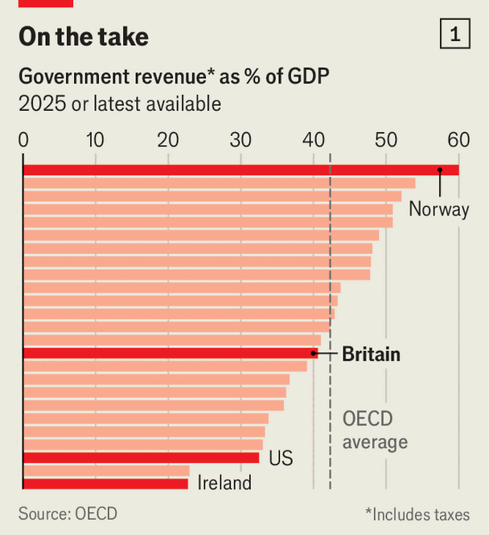
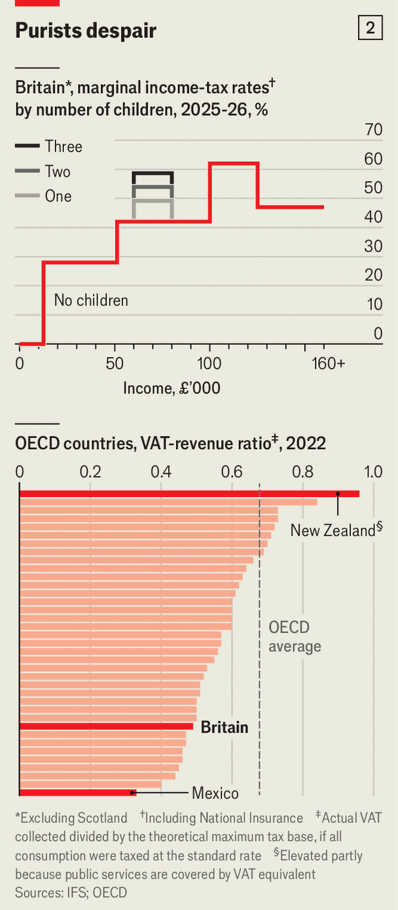

Britain’s taxes are strewn with loopholes and perverse incentives
They need reform
Oct 1st 2026
John Healey’s speech to the Labour Party conference in Liverpool on September 28th mentioned “hope” 21 times. Yet the main thing the chancellor was hoping for went unsaid: to emerge unscathed from the budget on October 28th. Rising debt costs have left the chancellor scrabbling around for tax rises to fill a fiscal hole—something he conspicuously avoided discussing, mentioning tax not once. The Tories are already sharpening their attack lines: even before the budget, taxes are forecast to reach 38% of GDP by 2030, their highest share since the 1940s.
Yet rows over the right amount of taxation miss the bigger story. Although exact comparisons are hard, Britain’s overall tax levels are unexceptional by international standards. Its revenues as a percentage of GDP remain below average for the OECD, a club of mostly rich countries (see chart 1). What marks Britain apart is how bonkers its tax system is. When a parent’s net income increases by £1 from £99,999 to £100,000, they can lose thousands of pounds of free child care in one fell swoop. Gingerbread men with chocolate trousers incur value-added tax (VAT) worth 20%, but no tax is charged on those with chocolate only for their eyes.

These are not isolated examples. At the core of a good tax system is neutrality, the idea that taxes should be raised with minimal distortions (such as not prioritising some forms of incomes over others). Yet from corporation tax to inheritance tax, the British system violates this principle. To paraphrase Leo Tolstoy, every tax system is unhappy in its own way. But the Tax Foundation, a think-tank, has compiled an index of tax competitiveness that ranks Britain 32nd out of 38 OECD countries.
Britain’s byzantine system should matter to everyone, not just neat freaks. The country’s productivity growth is sluggish. It cannot afford a tax regime that undermines growth at every turn, whether that be discouraging people to take on more hours or to move to a job with higher pay.
The biggest taxes pose some of the worst problems. Take income tax and national insurance, a payroll levy, which together raise £570bn a year ($755bn, or 49% of the tax take). They are a roller-coaster (see chart 2, top panel). Even for high earners who do not face the free-child-care cliff edge, the marginal rate rises from 42% to 62% at salaries of £100,000, before dropping to 47% at £125,140.

Nor do those on middling incomes escape the dizziness. A parent of two children earning £60,000 faces a marginal rate of 54%, dropping to 42% at £80,000. High marginal rates at arbitrary points in the income distribution are not only unfair, but discourage some of Britain’s most productive workers from working more.
Still more pernicious is the disparity in the taxation of some types of income compared with others. Working-age employees pay full national insurance, with employers forking out 15% on top. The self-employed pay a lower rate and have no employer contributions. As a result the median employee’s earnings are liable for 55% more tax than the equivalent self-employed person. This encourages workers to be self-employed even if they would be more productive at a company.
Landlords, pensioners and partners in firms all pay lower rates of national insurance, if at all. This is supposedly a form of social security. But Britain’s benefits system long ago stopped being truly contributory. All that is left is a distortionary regressive tax. The solution is well-known: charge the same rates for different forms of income and smooth out the kinks.
VAT, the next-biggest tax, which raises £190bn a year, is if anything worse. Over the years, politicians have reprieved whole sectors from paying it in pursuit of worthy goals. Rishi Sunak, a former chancellor, stopped charging VAT on e-books in 2020 (reading is good for you). Andy Burnham this year took the tax off electricity bills on his second day as prime minister (not freezing to death is even better).
But the result is a mess. Millions of pounds are wasted on lawyers arguing over issues like whether ferrets are pets or working animals. VAT reliefs cost the Treasury nearly £70bn, an amount similar to the defence budget. Although politicians claim these measures help the poorest, it is richer families who save the most in absolute terms as they can afford to consume more.
Britain performs poorly by international standards. The least distortionary VAT system would have no exemptions and no dodgers. This is best measured by the revenue ratio, which compares a country’s actual VAT receipts with how much it could have raised if the tax was collected on all consumption. Britain’s ratio is only 49%, nine percentage points below the OECD average (see chart 2, bottom panel). The problem can be fixed by charging VAT on all consumption and using some of the additional revenue to lower rates. Politicians who worry about struggling families can then channel the rest of the extra tax-take to benefits targeted at the poorest.
A tax does not have to be big to wreak havoc. Stamp duty, paid on transactions of properties and shares, raises less than £25bn a year. It is one of Britain’s oldest taxes (it was introduced in 1694) and one of its worst, discouraging people from trading assets with others who might get more use from them. Pensioners squat in houses too big for them, professionals don’t take a higher-paying job because the costs of moving are too high. The Office for Budget Responsibility, a fiscal watchdog, estimated in 2017 that a one-percentage-point decrease in stamp duty would increase residential transactions by around 6%.
The top marginal rate of residential stamp duty in Britain is 12%, higher than anywhere in the OECD bar Belgium (or, to be precise, Brussels). Scrapping the tax and paying for it by increasing annual taxes on land ownership would be a big improvement. But that would require a functioning recurring property-tax system. More’s the pity, then, that council tax, Britain’s version of this, is a disaster. Mansions in Mayfair pay less than two-bed flats in Hartlepool. Taxes are levied based on what homes were worth in 1991. Again, the solution is simple: re-evaluate property values and set the charge as a percentage of them.
The snag is that every one of these reforms would create losers: the undertaxed self-employed, rich London property owners and, yes, media companies that sell tax-free newspapers. Facing down losers requires courage. It is good, then, that Mr Burnham promised to be bold in his speech at his party conference this week. But he punted the underlying decisions—whether on the state pension or electoral reform—to after the next election. The more immediate test of his mettle will come at the budget. If he is serious about boldness, he and Mr Healey should start reforming the tax system. ■